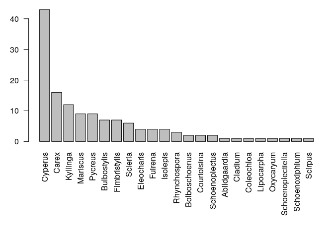

Introduction
taxlist is a package designed to handle and assess taxonomic lists in R, providing an object class and functions in S4 language. The homonymous object class taxlist was originally designed as a module for taxa recorded in vegetation-plot observations (see vegtable), but became as an independent object with the ability of contain not only lists of species but also synonymy, hierarchical taxonomy, and functional traits (attributes of taxa).
The main aim of this package is to keep consistence in taxonomic lists (a set of rules are checked by the function validObject()), to enable the re-arrangement of such data, and to statistically assess functional traits and other attributes, for instance taxonomy itself (function tax2traits() set taxonomic information as trait).
While this package only includes a function for the import of taxonomic lists from Turboveg, almost any data source can be structured as taxlist object, so far the information is imported into data frames in an R session and the consistency rules are respected (validity).
The use of taxlist is recommended for people cleaning raw data before importing it to relational databases, either in the context of taxonomic work or biodiversity assessments. The other way around, people having relational databases or clean and structured taxonomic lists may use taxlist as recipient of this information in R sessions in order to carry out further statistical assessments. Finally, the function print_name() makes taxlist suitable for its implementation in interactive documents using rmarkdonw and knitr (e.g. reports, manuscripts and check-lists).
The structure of taxlist objects is inspired on the structure of data handled by Turboveg and relational databases.

Figure: Relational model for taxlist objects (see Alvarez & Luebert 2018).
Installing taxlist
This package is available from the Comprehensive R Archive Network (CRAN) and can be directly installed within an R-session:
install.packages("taxlist", dependencies=TRUE)
Alternatively, the current development version is available from GitHub and can be installed using the package devtools:
library(devtools) install_github("kamapu/taxlist", build_vignette=TRUE)
A vignette is installed with this package introducing to the work with taxlist and can be accessed by following command in your R-session:
vignette("taxlist-intro")
Building taxlist Objects
Objects can be built step-by-step as in the following example. For it, we will use as reference the “Ferns of Chile” (original in Spanish: “Helechos de Chile”) by Gunkel (1984). We will create an empty taxlist object using the function new():
library(taxlist) Fern <- new("taxlist") Fern #> object size: 5.1 Kb #> validation of 'taxlist' object: TRUE #> #> number of taxon usage names: 0 #> number of taxon concepts: 0 #> trait entries: 0 #> number of trait variables: 0 #> taxon views: 0
Then we have to set the respective taxonomic ranks. In such case, the levels have to be provided from the lowest to highest hierarchical level:
For convenience, we start inserting taxa with their respective names in a top-down direction. We will use the function add_concept() to add a new taxon. Note that the arguments TaxonName, AuthorName, and Level are used to provide the name of the taxon, the authority of the name and the taxonomic rank, respectively.
Fern <- add_concept(Fern, TaxonName="Asplenium", AuthorName="L.", Level="genus") summary(Fern, "all") #> ------------------------------ #> concept ID: 1 #> view ID: none #> level: genus #> parent: none #> #> # accepted name: #> 1 Asplenium L. #> ------------------------------
As you see, the inserted genus got the concept ID 1 (see TaxonConceptID in the previous figure). To insert a species of this genus, we use again the function add_concept(), but this time we will also provide the ID of the parent taxon with the argument Parent.
Fern <- add_concept(Fern, TaxonName="Asplenium obliquum", AuthorName="Forster", Level="species", Parent=1) summary(Fern, "Asplenium obliquum") #> ------------------------------ #> concept ID: 2 #> view ID: none #> level: species #> parent: 1 Asplenium L. #> #> # accepted name: #> 2 Asplenium obliquum Forster #> ------------------------------
In the same way, we can add now two varieties of the inserted species:
Fern <- add_concept(Fern, TaxonName=c("Asplenium obliquum var. sphenoides", "Asplenium obliquum var. chondrophyllum"), AuthorName=c("(Kunze) Espinosa", "(Bertero apud Colla) C. Christense & C. Skottsberg"), Level="variety", Parent=c(2,2))
You may have realized that the function summary() is applied to provide on the one side a display of meta-information for the whole taxlist object, and on the other side to show a detail of the taxa included in the object. In the later case adding the keyword "all" as second argument, the summary will show a detailed information for every taxon included in the object.
summary(Fern) #> object size: 6.2 Kb #> validation of 'taxlist' object: TRUE #> #> number of taxon usage names: 4 #> number of taxon concepts: 4 #> trait entries: 0 #> number of trait variables: 0 #> taxon views: 0 #> #> concepts with parents: 3 #> concepts with children: 2 #> #> hierarchical levels: variety < species < genus #> number of concepts in level variety: 2 #> number of concepts in level species: 1 #> number of concepts in level genus: 1 summary(Fern, "all") #> ------------------------------ #> concept ID: 1 #> view ID: none #> level: genus #> parent: none #> #> # accepted name: #> 1 Asplenium L. #> ------------------------------ #> concept ID: 2 #> view ID: none #> level: species #> parent: 1 Asplenium L. #> #> # accepted name: #> 2 Asplenium obliquum Forster #> ------------------------------ #> concept ID: 3 #> view ID: none #> level: variety #> parent: 2 Asplenium obliquum Forster #> #> # accepted name: #> 3 Asplenium obliquum var. sphenoides (Kunze) Espinosa #> ------------------------------ #> concept ID: 4 #> view ID: none #> level: variety #> parent: 2 Asplenium obliquum Forster #> #> # accepted name: #> 4 Asplenium obliquum var. chondrophyllum (Bertero apud Colla) C. Christense & C. Skottsberg #> ------------------------------
From data frame to taxlist
A more convenient way is to create an object from a data frame including both, the taxon concepts with their accepted names and the taxonomic ranks with parent-child relationships. In the case of the last example, the required data frame looks like this one:
Fern_df <- data.frame( TaxonConceptID=1:4, TaxonUsageID=1:4, TaxonName=c("Asplenium", "Asplenium obliquum", "Asplenium obliquum var. sphenoides", "Asplenium obliquum var. chondrophyllum"), AuthorName=c("L.", "Forster", "(Kunze) Espinosa", "(Bertero apud Colla) C. Christense & C. Skottsberg"), Level=c("genus", "species", "variety", "variety"), Parent=c(NA, 1, 2, 2), stringsAsFactors=FALSE) Fern_df #> TaxonConceptID TaxonUsageID TaxonName #> 1 1 1 Asplenium #> 2 2 2 Asplenium obliquum #> 3 3 3 Asplenium obliquum var. sphenoides #> 4 4 4 Asplenium obliquum var. chondrophyllum #> AuthorName Level Parent #> 1 L. genus NA #> 2 Forster species 1 #> 3 (Kunze) Espinosa variety 2 #> 4 (Bertero apud Colla) C. Christense & C. Skottsberg variety 2
This kind of tables can be written in a spreadsheet application and imported to your R session. The two first columns correspond to the IDs of the taxon concept and the respective accepted name. They can be custom IDs but are restricted to integers in taxlist. For the use of the function df2taxlist(), the two first columns are mandatory. Also note that the column Parent is pointing to the concept IDs of the respective parent taxon. To get the object, we just use the df2taxlist() indicating the sequence of taxonomic ranks in the argument levels.
Fern2 <- df2taxlist(Fern_df, levels=c("variety", "species", "genus")) Fern2 #> object size: 6.2 Kb #> validation of 'taxlist' object: TRUE #> #> number of taxon usage names: 4 #> number of taxon concepts: 4 #> trait entries: 0 #> number of trait variables: 0 #> taxon views: 0 #> #> concepts with parents: 3 #> concepts with children: 2 #> #> hierarchical levels: variety < species < genus #> number of concepts in level variety: 2 #> number of concepts in level species: 1 #> number of concepts in level genus: 1
Similar Packages
The package taxlist shares similar objectives with the package taxa, but uses different approaches for object oriented programming in R, namely taxlist applies S4 while taxa uses R6. Additionally, taxa is rather developer-oriented, while taxlist is rather a user-oriented package.
In following cases you may prefer to use taxlist:
- When you need an automatic check on the consistency of information regarding taxonomic ranks and parent-child relationships (parents have to be of a higher rank then children), as well as non-duplicated combinations of names and authors. Such checks are done by the function
validObject(). - When you foresee statistical assessments on taxonomy diversity or taxon properties (chorology, conservation status, functional traits, etc.).
- When you seek to produce documents using rmarkdown, for instance guide books or check-lists. Also in article manuscripts taxonomic names referring to a taxon concept can easily get formatted by the function
print_name(). - When importing taxonomic lists from databases stored in Turboveg 2.
- When you seek to implement the package
vegtablefor handling and assessing biodiversity records, especially vegetation-plot data. In that case, taxonomic lists will be formatted bytaxlistas a slot within avegtableobject.
Rmarkdown Integration
As mentioned before, taxlist objects can be also used for writing rmarkdown documents (see this poster). For instance you can insert your objects at the beginning of the document with a hidden chunk:
To mention a taxon, you can write in-line codes, such as `r print_name(Easplist, 206)`, which will insert Cyperus papyrus L. in your document (note that the number is the ID of the taxon concept in Easplist). Fort a second mention of the same species, you can then use `r print_name(Easplist, 206, second_mention=TRUE)`, which will insert C. papyrus in your text.
Descriptive Statistics
Information located in the slot taxonTraits are suitable for statistical assessments. For instance, in the installed object Easplist a column called lf_behn_2018 includes a classification of macrophytes into different life forms. To know the frequency of these life forms in the Easplist, we can use the function count_taxa():
# how man taxa in 'Easplist' count_taxa(Easplist) #> [1] 3887 # frequency of life forms count_taxa(~ lf_behn_2018, Easplist) #> lf_behn_2018 taxa_count #> 1 acropleustophyte 8 #> 2 chamaephyte 25 #> 3 climbing_plant 25 #> 4 facultative_annual 20 #> 5 obligate_annual 114 #> 6 phanerophyte 26 #> 7 pleustohelophyte 8 #> 8 reed_plant 14 #> 9 reptant_plant 19 #> 10 tussock_plant 52
Furthermore, taxonomic information can be also transferred to this slot using the function tax2traits(). By this way we will make taxonomic ranks suitable for frequency calculations.
Easplist <- tax2traits(Easplist, get_names=TRUE) head(Easplist@taxonTraits) #> TaxonConceptID lf_behn_2018 form variety subspecies #> 1 7 phanerophyte <NA> <NA> <NA> #> 2 9 phanerophyte <NA> <NA> <NA> #> 3 18 facultative_annual <NA> <NA> <NA> #> 4 20 facultative_annual <NA> <NA> <NA> #> 5 21 obligate_annual <NA> <NA> <NA> #> 6 22 chamaephyte <NA> <NA> <NA> #> species complex genus family #> 1 Acacia mearnsii <NA> Acacia Leguminosae #> 2 Acacia polyacantha <NA> Acacia Leguminosae #> 3 Achyranthes aspera <NA> Achyranthes Amaranthaceae #> 4 Acmella caulirhiza <NA> Acmella Compositae #> 5 Acmella uliginosa <NA> Acmella Compositae #> 6 Aeschynomene schimperi <NA> Aeschynomene Leguminosae
Note that the respective parental ranks are inserted in the table taxonTraits, which contains the attributes of the taxa. In the two next command lines, we will produce a subset with only members of the family Cyperaceae and then calculate the frequency of species per genera.
Cype <- subset(Easplist, family == "Cyperaceae", slot="taxonTraits") Cype_stat <- count_taxa(species ~ genus, Cype)
Now, we can sort them to produce a nice bar plot.
Cype_stat <- Cype_stat[order(Cype_stat$species_count, decreasing=TRUE), ] par(las=2, mar=c(10,5,1,1)) with(Cype_stat, barplot(species_count, names.arg=genus, ylab="Number of Species"))

Acknowledgements
The author thanks Stephan Hennekens, developer of Turboveg, for his patience and great support finding a common language between R and Turboveg, as well as for his advices on formatting our taxonomic list EA-Splist.
Also thanks to Federico Luebert for the fruitful discussions regarding the terminology used in this project.